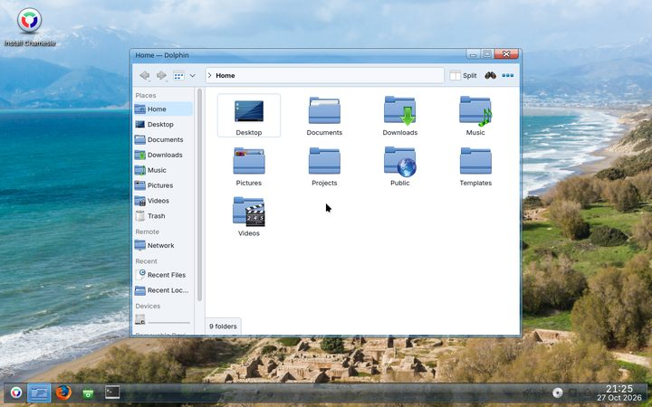
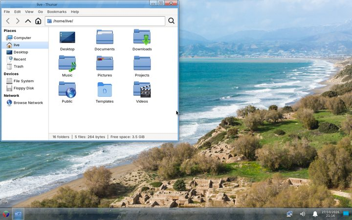
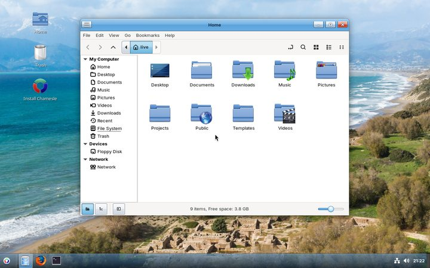
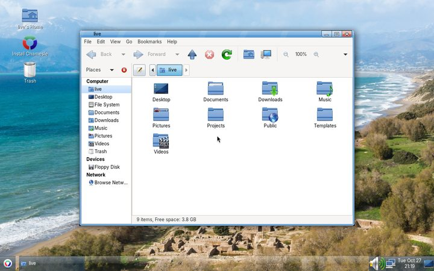
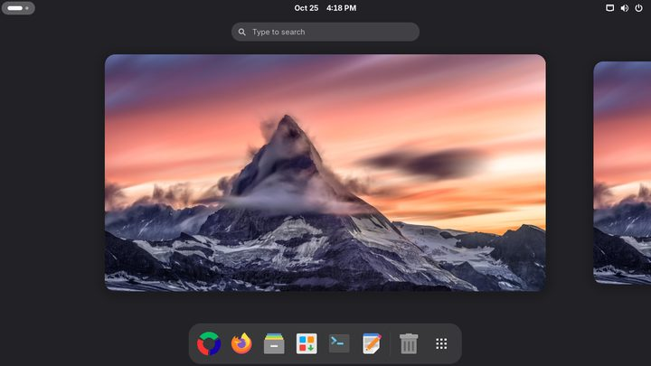
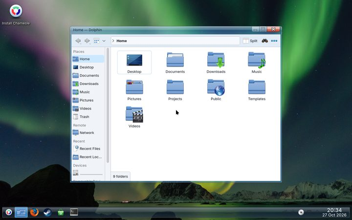
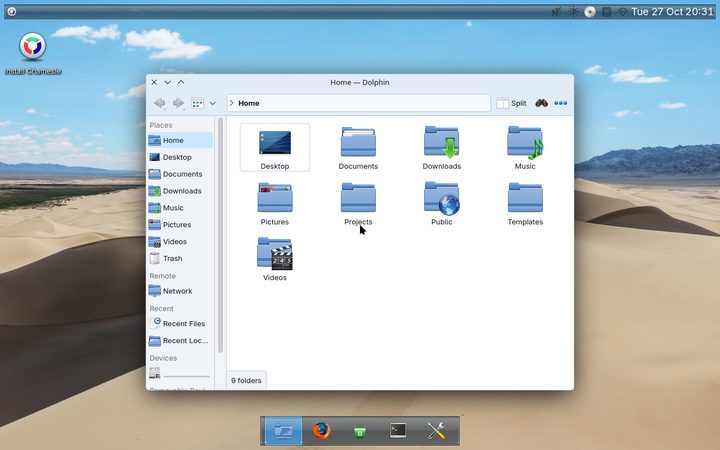
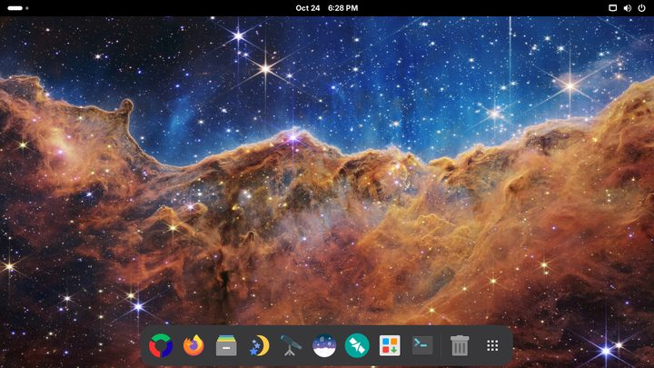

Your computer, just working.
A Linux desktop for people leaving Windows. It looks like what you're used to, runs Flathub apps,
.deb, .rpm and Windows programs, and installs next to Windows if you want to keep it.
618 MB · 64-bit PC · free · already on it? sudo apk upgrade

Everything you need, already there
Install it, sign in, and get on with your day. No terminal needed, unless you want one.
Feels familiar
A taskbar, a start menu and windows you can see through: Chamesle Glass, on every desktop but GNOME.
Apps with a double-click
The Chamesle Store brings Flathub and our repo together. .deb, .rpm, .exe and .msi files just open.
Updates you can undo
A snapshot before every update. If something breaks, pick the one from before in the boot menu.
Next to Windows
Jiggity, the installer, makes room next to Windows, or takes the whole disk, encrypted if you like.
Drivers sorted
The Driver Manager sets up NVIDIA cards and Wi-Fi chips that need it. Firmware for your hardware comes with the install.
Solid underneath
Void Linux, an LTS kernel and almost 15,000 signed packages. Updates weekly, held back until they've proven themselves.
Pick your desktop
One download for all of them. You choose while installing, and can add another later.

KDE Plasmachanges to fit you
Xfcelight, set up like Windows
CinnamonLinux Mint's desktop
MATElighter still, for older PCs
GNOMEan overview and a dock
PlaySteam and controllers, ready
RanniPlasma laid out like a Mac
AstroGNOME with sky appsNews
- 0.7 "Be Kool" is out. Glass windows, taskbar and sign-in screen, Oxygen icons, a new logo, and a Store with screenshots, ratings, firmware and updates in the background. What's new
- Serp is coming with 1.0: a desktop of our own, with a public beta first. Roadmap
- 0.6 brought one ISO for every desktop, the Jiggity installer, and Ranni, Play, TTY and Server.
Facts
| Release | 0.7 "Be Kool" (Margit) |
| Based on | Void Linux |
| Packages | about 15,000, signed |
| Package manager | apk |
| Init | dinit |
| Kernel | Linux 6.18 LTS |
| Updates | weekly |
Give it a try
Run it from a USB stick first. Nothing changes on your computer until you say so.